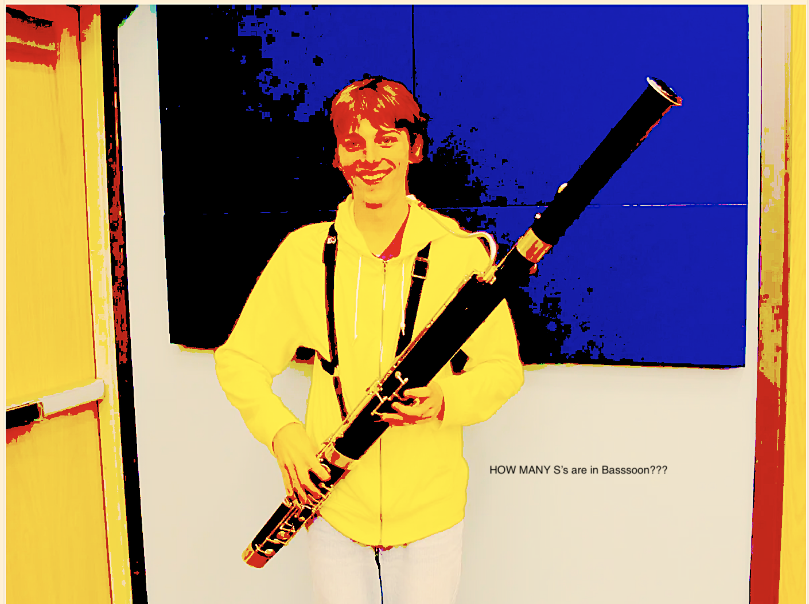
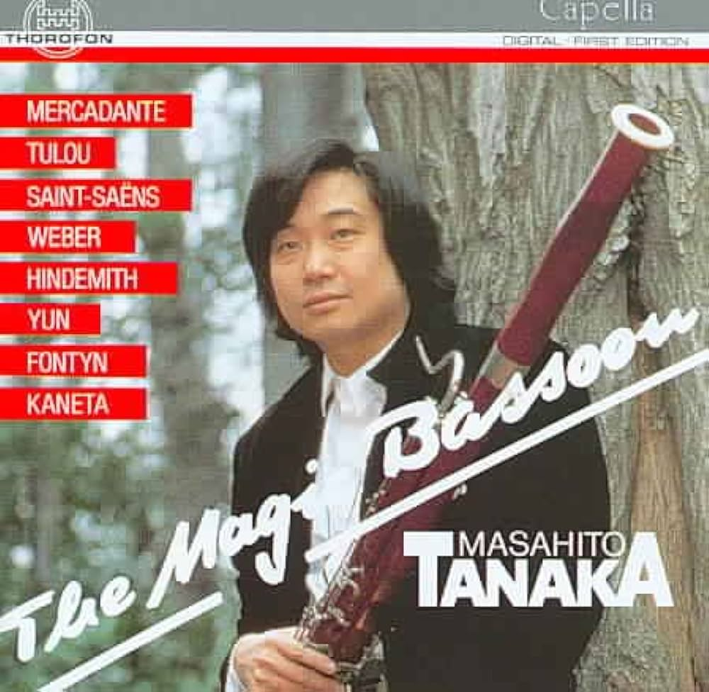

OUR BAND
Meet John Zajac, a 32-year-old enigma hailing from the curious corners of New Jersey. Fleeing the clutches of the Garden State's rat-infested embrace, John stumbled upon his unexpected calling: mastering the art of bluegrass bassoon. Picture him, clad in a cape adorned with images of ducks and rabbits, wandering through the urban jungle, his bassoon wailing mournful melodies into the night air.
But John's journey was far from over. In the throes of his mid-twenties crisis, he embarked on a quest of self-discovery, delving into the realms of magic, punk rock, and veganism with fervor. It was during this chaotic period that fate intervened in the form of his war buddy, Jackson Powell. Jackson, a fellow bluegrass bassoonist whose skills were eclipsed only by his prowess in virtual warfare (thanks to endless hours of Call of Duty), joined forces with John in a partnership destined for absurdity.

Their collaboration took an unexpected turn when they decided to unleash their creative energies upon the timeless recordings of Prince. Armed with their trusty bassoons and a devil-may-care attitude, they set out to transform the iconic melodies into raucous punk hardcore ballads. The result? A cacophony of sound that defied logic and reason, leaving audiences simultaneously bewildered and enthralled.

And so, amidst the chaos of their musical experimentation, John Zajac and Jackson Powell forged a bond that transcended the boundaries of conventionality. Together, they navigated the murky waters of artistic expression, guided only by their shared love for the absurd and the unyielding desire to leave their mark on the world, one bassoon riff at a time.